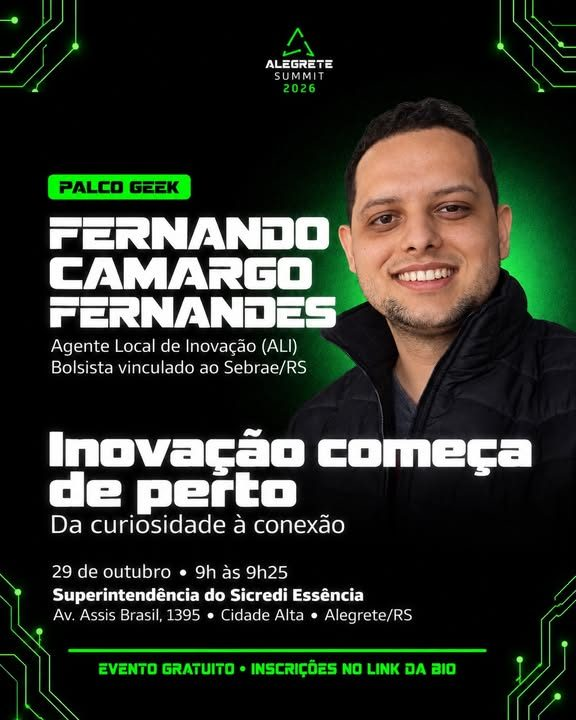
Innovation starts close to home: from curiosity to connection
Fernando Camargo Fernandes, Local Innovation Agent (ALI), fellow linked to Sebrae/RS
Auditorium of the Sicredi Essência Regional Office, Av. Assis Brasil, 1395, Cidade Alta, Alegrete, RS, Brazil. Free event, with a certificate of participation.
Sessions are held in Portuguese.
Ideas, journeys and connections that inspire. See the talks below.
Robotics, artificial intelligence, 3D printing and other hands-on experiences to discover projects and try innovation in practice.
Curated by Vitor Almada, administrator of PampaTec
13 teams present ideas in the Edtech and traditional innovation categories, with a 3-minute pitch each. The top three win prizes.
Why invest in Alegrete Summit? With sponsors Sicredi, Sebrae and the City of Alegrete.
A strategic overview of Rio Grande do Sul and the region. Focus: scenarios and strategies.
Alessandro Girardi, professor at Unipampa and coordinator of PampaTec · Rafael Dill, business owner and professor at Urcamp · Cássia Nespolo, coordinator of Inova RS Fronteira Oeste e Campanha · Jesse Trindade, mayor of Alegrete · Zeca Menezes, president of Sicredi Essência · Moderator: Cristina Aurélio, innovation and technology manager at Inova RS
The future is already here (and I saw it up close in China): technology, business and behavior.
Émerson Oliveira Rizzatti, coordinator of the PampaTec Startup Incubator · Moderator: Cristina Aurélio
Cases from Alegrete business owners.
Moderator: Felipe Barão

Fernando Camargo Fernandes, Local Innovation Agent (ALI), fellow linked to Sebrae/RS
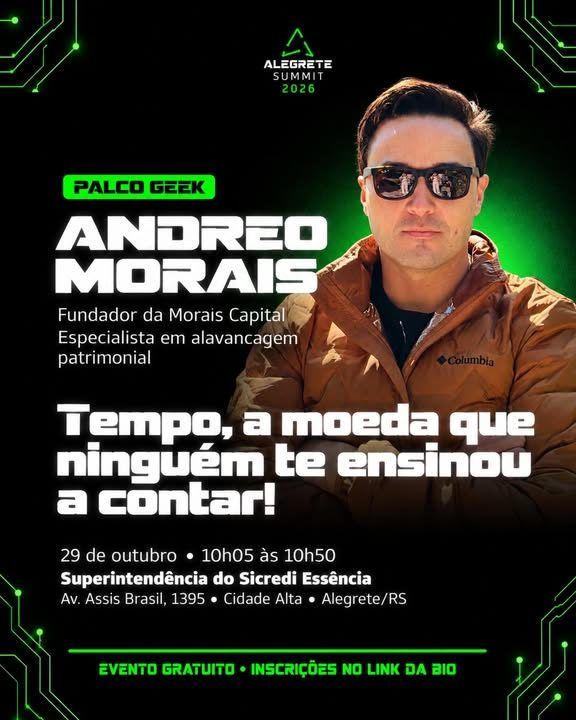
Andreo Morais, founder of Morais Capital
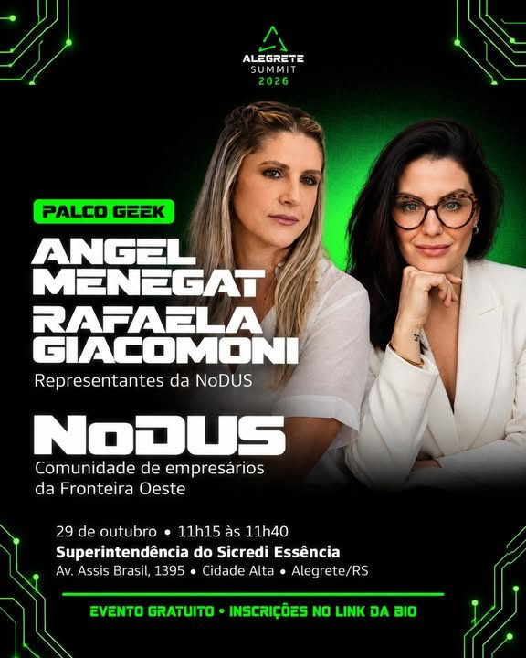
Angel Menegat and Rafaela Giacomoni, representatives of NoDUS
Nico
Carol Machado, digital influencer, content creator and journalism student
Itamar Rodriguez, educator and neuropsychopedagogue
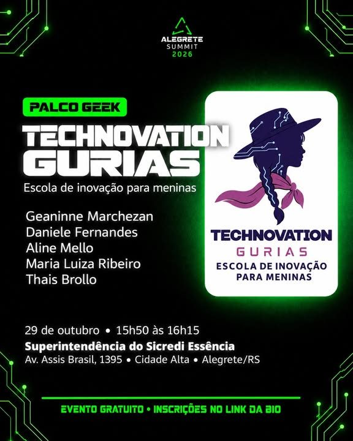
Geaninne Marchezan, Daniele Fernandes, Aline Mello, Maria Luiza Ribeiro and Thais Brollo
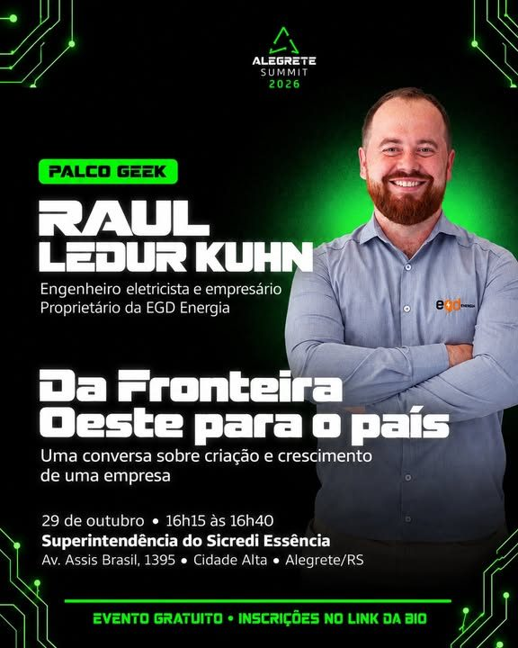
Raul Ledur Kuhn, electrical engineer, owner of EGD Energia
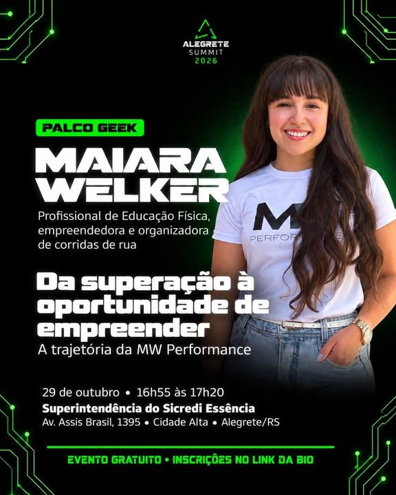
Maiara Welker, from street running to MW Performance and the MW Circuit, projects that connect people, businesses and the Alegrete community
A day to turn the region's challenges into ideas and solutions.
Knowledge, creativity and experience turned into opportunities. See the talks below.
A second day of robotics, AI, 3D printing and projects from the region.
Techniques to capture the audience's attention: framing, composition, lighting, audio, shot direction and editing. No experience required.
With Anita Rizzatti, content creator and visual artist
11 years turning real problems into technology that becomes product, from business strategy to building solutions with data and artificial intelligence.
Evandro Salles, co-founder and CEO · Sandro Salles, co-founder and CTO of Contact Pró
The people who drive transformations and are affected by them.
Marcus Rossi, CEO and founder of Gramado Summit
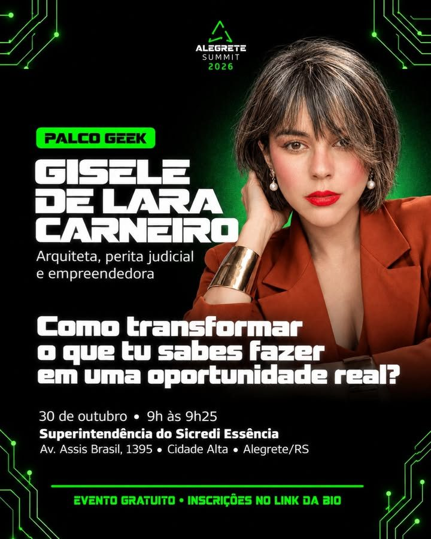
Gisele de Lara Carneiro, architect, court-appointed expert and entrepreneur
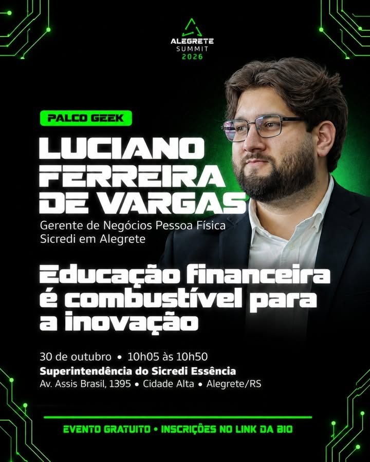
Luciano Ferreira de Vargas, personal banking business manager at Sicredi in Alegrete
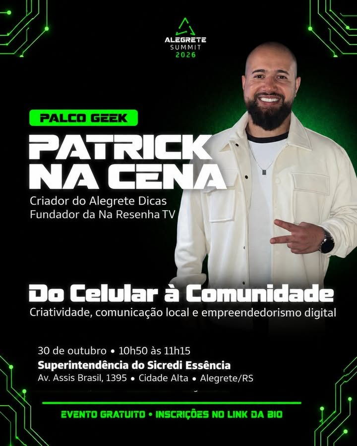
Patrick Na Cena, creator of Alegrete Dicas and founder of Na Resenha TV
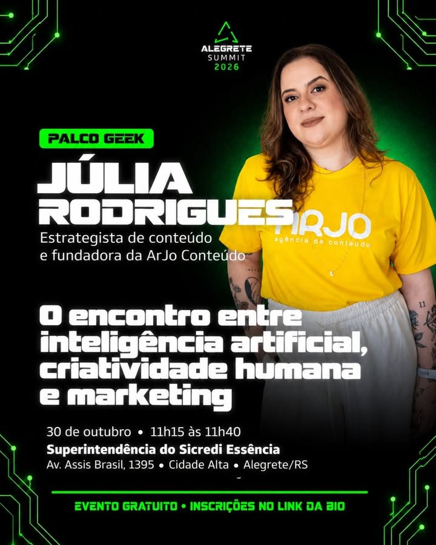
Júlia Rodrigues, content strategist and founder of ArJo Conteúdo
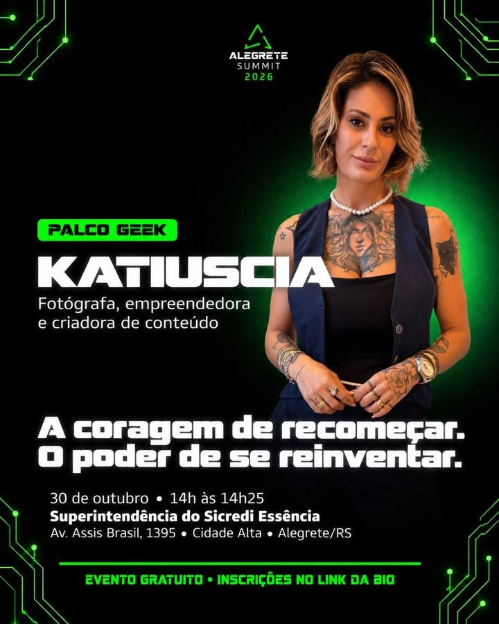
Katiuscia Oliveira, photographer, entrepreneur and content creator
Leidria Moreira, makeup artist and entrepreneur, head of Casa Leidria Glow
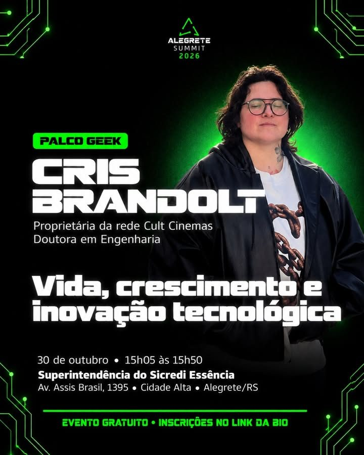
Cris Brandolt, owner of the Cult Cinemas chain, PhD in Engineering
How technology, creativity and entrepreneurship are transforming sports in the Fronteira Oeste region. Getúlio Fernandes Duarte, the story of Joga Mais TV
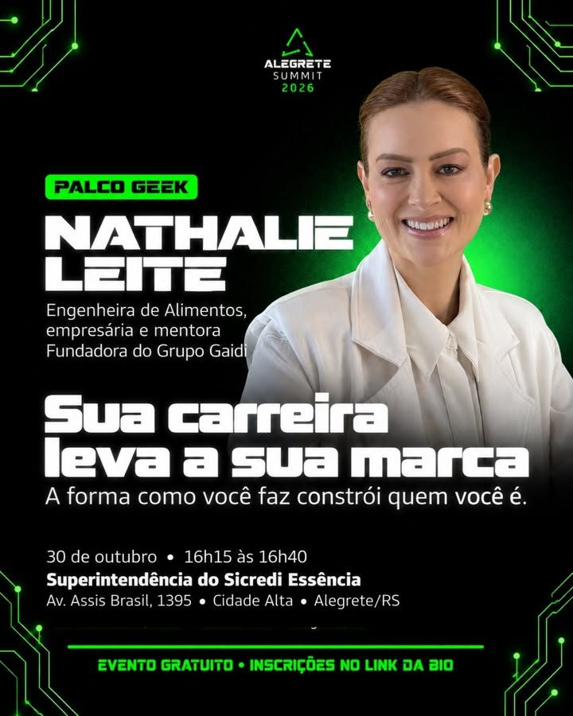
Nathalie Leite, food engineer, business owner and mentor, founder of Grupo Gaidi
Felipe Nunes Bairros, entrepreneur at the head of VMDC3: sales, digital marketing and communication
The artwork published on Instagram, to save and share.